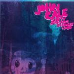

Music Reviews
-

John Cale Shifty Adventures in Nookie Wood
Like any true artist, John Cale keeps moving. We ponder how well he hits his marks this time.
Alan Shulman reviews... -
ERAAS s/t
Ex-Apse members Robert Toher and Austin Stawiarz are ERAAS. The band’s self-titled debut, is stark and rhythmically inventive, though it leans too heavily on lo-fi embellishments.
Sean Caldwell reviews... -

The Mountain Goats Transcendental Youth
Another year, another release by The Mountain Goats. Can Transcendental Youth live up to their previous record, the critically acclaimed All Eternals Deck? The answer: not exactly.
Joshua Pickard reviews... -

The Soft Pack Strapped
The band formerly known as the Muslims return with album number three.
Carlos Villareal reviews... -
Amanda Palmer & The Grand Theft Orchestra Theatre Is Evil
Former Dresden Doll, Amanda Palmer's latest arrived amidst a whirlwind of chatter and speculation as to what its crowd-funding meant for the music industry, and whether she was spending the money raised in the best, or fairest, manner. After all that, is it possible to judge the album based solely on its contents?
Mark Davison tries his best... -
Muse The 2nd Law
Muse's latest album is certainly an improvement over The Resistance. The band still isn't firing on all cylinders though, with several musical explorations that go down dead-end streets. You'll either love these songs or you'll loathe them.
Joe Marvilli researches the second law of thermodynamics.... -
YOKOKIMTHURSTON YOKOKIMTHURSTON
This collaboration between now-separated pioneering alt-rock couple Kim Gordon and Thurston Moore, and boundless vocal improviser Yoko Ono, finds them at their most wildly experimental, but also their most dissatisfyingly formless.
Stephen Wragg spares the quips about bands breaking up because of Yoko Ono... -
Dum Dum Girls End of Daze
Dum Dum Girls have released what may be one of the greatest pop records of the year, and it's only an eighteen minute long EP.
David Hogg reviews... -

Sun Airway Soft Fall
On his latest release, Philadelphia native Jon Barthmus is in search for absolute beauty, mashing symphonic arrangements and lavishing synth effects with effortless poise.
Juan Edgardo Rodríguez reviews... -

Green Day Uno!
Billy Joe may have just publicly stumbled, but his band gets up and does it again on their new album.
Alan Shulman review...